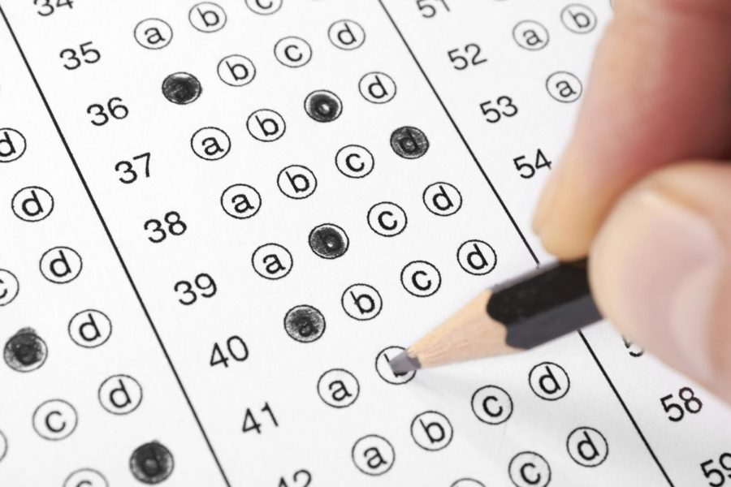

Standardized College Entrance Exams: an evaluation

pros of college entrance exams:
- Standardized (unlike GPA)
- Although dependent on wealth, Scores may be less dependent than acess to ECs and AP course
- Can serve as a hail mary for low income students that aren't strong in other areas
cons of college entrance exams:
- These tests still very much benefit wealthy students
- Students can spend more time focusing on their grades and essays if they are not studying for a test
- Students with high test anxiety will not get a fair showcase of their intilgence
How did COVID-19 Impact College Entrance Testing Policy
In response to the COVID-19 pandemic, most colleges and univserisities implemented a test optional for the Incoming Classes of 2025 and 2026. Some schools even scrapped the test all together and went test blind, such as the UCs. Many of these schools have made their change in policy permanent, so the COVID pandemic appears to already have long lasting effects in the college application process.
Early Returns on Test Optional/Blind Policy
- Students who submited test scores were admitted at a higher rate than those who did not
- Schools that went test optional are getting many more applicants than they did prior to going test optional
- Test optional schools have not meaningfully increased diversity just by going test optional